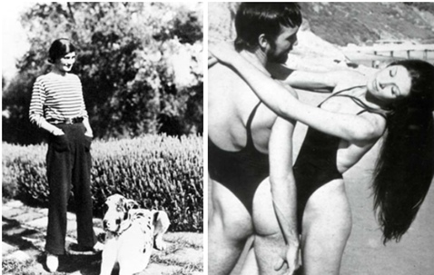
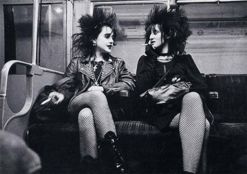
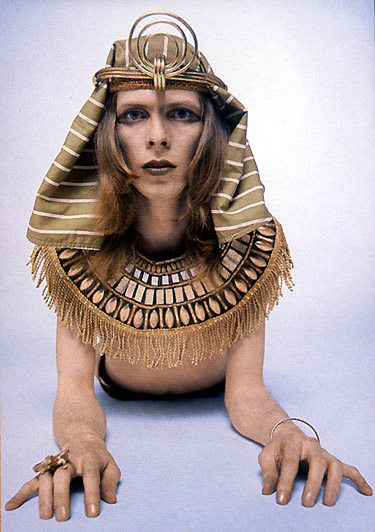
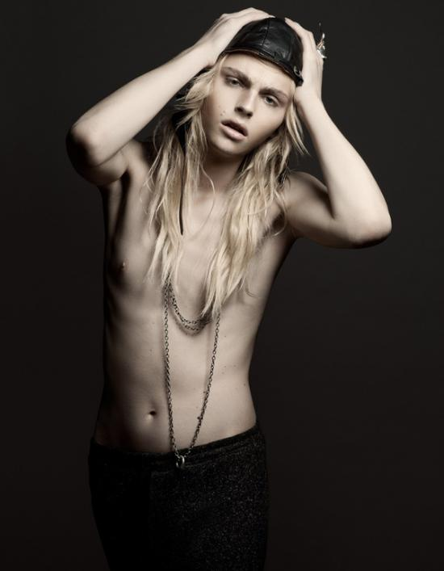

Унисекс, или юнисекс (от англ. unisex, не различимый по полу, годный для лиц обоего пола) — стиль, появившийся в 60-х годах ХХ века. Многие считают, что основной причиной его появления явились изменения, произошедшие в традиционном распределении ролей между мужчиной и женщиной. Стиль унисекс касается не только одежды, но также обуви, прически, макияжа и парфюма.
Данный стиль начал развиваться на западе в 60-е годы ХХ века. Однако различные исследователи моды до сих пор не пришли к диному мнению, откуда же все-таки взялась идея данного стиля.
Первые шаги к появлению этого стиля сделали такие модельеры, как знаменитая Коко Шанель (Coco Chanel) и Руди Гернрейх (Rudi Gernreich). Первая ввела в женскую моду элементы мужского гардероба, отказавшись от корсетов и пышных юбок и считая главным в одежде удобство и комфорт. Второй же в своих коллекциях 60-х годов отразил идею отказа от половой принадлежности, явив миру унисекс-купальники.

Некоторые также считают, что возникновению стиля унисекс способствовали панки и хиппи. Представители этих субкультур смело стирали границы между мужской и женской одеждой, позволяя женщине одеваться более свободно, отметая предубеждения, связанные с внешним видом, вследствие чего в повседневном наряде представительниц слабого пола стали появляться джинсы и брюки. Первой доступной для всех унисекс-одеждой являются как раз джинсы.
Немного позже на сцену вышли худенькие, андрогинного вида девушки с короткими стрижками, вроде Твигги. На сцене появился длинноволосый Дэвид Боуи, который использовал в своем образе макияж и яркие вещи в стиле глэм-рок, что служило намеком на бесполость. Постепенно в обществе стал культивироваться образ сильной деловой женщины, хозяйки своей судьбы, затянутой в строгий мужской офисный костюм. Женщина получила новую социальную роль, что также послужило размытию границ между мужским и женским образами.

Пик популярности
Впервые на пике популярности стиль унисекс оказался в 90-х годах ХХ века благодаря известному модельеру Кельвину Кляйну (Calvin Klein) и модели Кейт Мосс (Kate Moss), продемонстрировавшей его знаменитую коллекцию для тинейджеров. В нее Кляйн включил вещи, среди которых были бесформенные свитеры, костюмы светлых оттенков и широкие джинсы, одинаково подходившие, как юношам, так и девушкам. Молодежь того времени приняла данный стиль с восторгом, и он начал свое победное шествие по планете.
Поклонники и противники
Стиль унисекс стер различия между полами, однако было бы неправильно утверждать, что он создал новый, безликий «третий пол». В современном мире одежда унисекс пользуется большой популярностью благодаря ее практичности, демократичности и комфортности. Многие известные модельеры говорят об унисексе, как о стиле будущего, поскольку он прост и удобен.
Секрет стиля унисекс в его универсальности. Он подходит и мужчинам, и женщинам, его поклонниками являются как обычные люди, так и знаменитости.

Но, помимо поклонников, стиль имеет еще и своих противников, указывающих на недостатки всеобщей унифицированности: потеря человеком индивидуальности, размытие границ между мужчинами и женщинами. Однако их оппоненты говорят, что различия между мужчиной и женщиной настолько очевидны, что их не стоит подчеркивать с помощью одежды, так же, как и собственную индивидуальность, поскольку приверженцы стиля привыкли оценивать человека по его личным качествам и поступкам, а не по той одежде, которую он носит.
Унисекс в наше время. Стиль унисекс разделяется на несколько подвидов: классический, уличный, протестный, глобалистский и милитари. Сегодня стиль унисекс несколько сдал свои позиции и не имеет такой популярности, как в 90-е годы прошлого века, однако по-прежнему миллионы людей (и мужчин,и женщин) любят надевать джинсы, кеды, футболки и толстовки в силу их практичности и удобства. Также большой популярностью пользуются сегодня модели-андрогины: Андрей Пежич (Andrej Pejic), Данила Поляков (Danila Polyakov), Мартин Кон (Martin Cohn), Майкл Хадсон (Michael Hudson), Купер Томпсон (Cooper Thompson), Марсель Кастенмиллер (Marcel Castenmiller), Агнесс Дейн (Agyness Deyn), Стелла Теннант (Stella Tennant), Кристина Салиновиц (Kristina Salinovic), Джейми Бушер, Саския де Брау (Saskia de Brauw) и другие. Любители унисекс-стиля предпочитают носить джинсы (чаще всего это skinny jeans), брюки, пуловеры, рубашки, водолазки, джемперы, куртки, джинсовки, пальто. Одежда стиля унисекс не отличатся чрезмерной яркостью, не стесняет движений. Такие вещи, как правило, не мнутся, не расстегиваются в самый неподходящий момент и не причинят своим владельцам каких-либо неудобств.
Приверженцы стиля предпочитают носить удобную обувь: кеды, сникеры, кроссовки, ботинки; девушки отказываются от каблуков.
